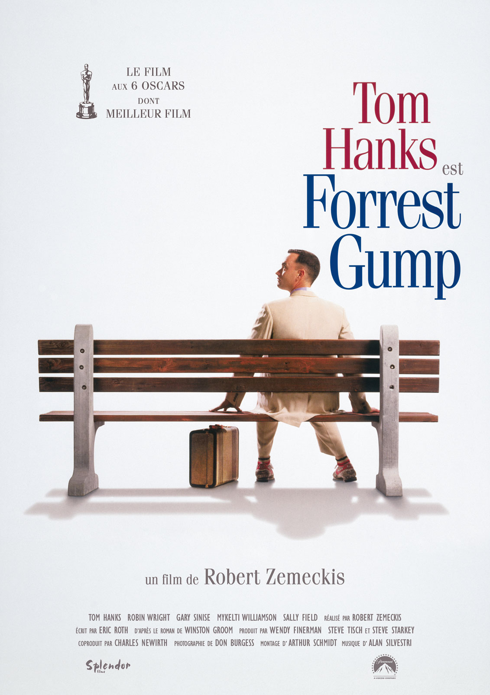

Alexandre VB
Excitavit hic ardor milites per municipia plurima, quae isdem conterminant: persultat et mollia, missilibus obvios eminus lacessens et ululatu truci perterrens.
See for yourself 
|
InceptionDom Cobb est un voleur expérimenté – le meilleur qui soit dans l’art périlleux de l’extraction : sa spécialité consiste à s’approprier les secrets les plus précieux d’un individu, enfouis au plus profond de son subconscient, pendant qu’il rêve et que son esprit est particulièrement vulnérable. Très recherché pour ses talents dans l’univers trouble de l’espionnage industriel, Cobb est aussi devenu un fugitif traqué dans le monde entier qui a perdu tout ce qui lui est cher. Mais une ultime mission pourrait lui permettre de retrouver sa vie d’avant – à condition qu’il puisse accomplir l’impossible : l’inception. Au lieu de subtiliser un rêve, Cobb et son équipe doivent faire l’inverse : implanter une idée dans l’esprit d’un individu. S’ils y parviennent, il pourrait s’agir du crime parfait. Et pourtant, aussi méthodiques et doués soient-ils, rien n’aurait pu préparer Cobb et ses partenaires à un ennemi redoutable qui semble avoir systématiquement un coup d’avance sur eux. Un ennemi dont seul Cobb aurait pu soupçonner l’existence. |
BMS the movieThad Castle, recently drafted into the pros, is now an ostentatious multi-millionaire with high prospects as an NFL player. At Blue Mountain State, his former team is training as normal under an increasingly frustrated Coach Daniels and new assistant coach Larry, with Alex as the senior captain. However, Alex realizes that the only three players with any notable skill left are himself, Harmon, and Donnie, and declares that he will devote himself to partying for his final year of college due to the fact that his team is set to have a losing season. Sammy, meanwhile, is still attempting to find sexual gratification, usually masturbating to the sight of either Alex's -- or his sister Mary Jo's -- conquests. Mary Jo, still a lesbian, tells Alex about her newest conquest, a ditzy airhead named Holly. |
|
|  | Forrest GumpLe film relate l'histoire mouvementée des États-Unis entre les années 1950 et les années 1980 au travers du regard d'un « simple d'esprit », Forrest Gump, qui devient involontairement l'acteur central, voire l'instigateur des principaux événements de cette époque en Amérique. |
About this page
This page has been coded during the FullStack program @LeWagon. i will became master of the universe